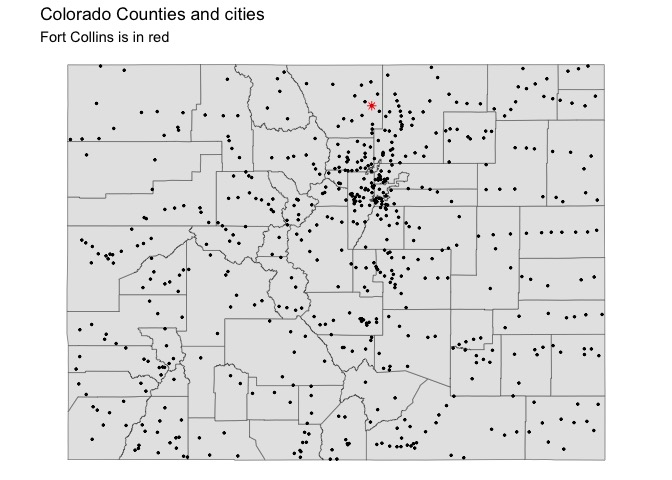
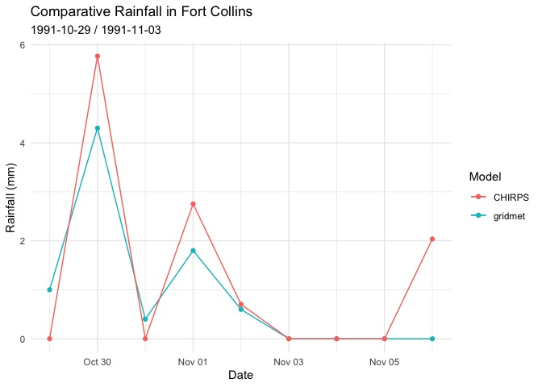

climateR simplifies the steps needed to get gridded geospatial data into R. At its core, it provides three main things:
- A catalog of 108106 geospatial climate, land cover, and soils resources from 3477 collections. See (
climateR::catalog)
This catalog is an evolving, federated collection of datasets that can be accessed by the data access utilities. This resource is rebuilt automatically on a monthly cycle to ensure the data provided is accurate, while continuously growing based on user requests.
A general toolkit for accessing remote and local gridded data files bounded by space, time, and variable constraints (
dap,dap_crop,read_dap_file)A set of shortcuts that implement these methods for a core set of selected catalog elements
⚠️ Python Users: Data catalog access is available through the USGS
gdptoolspackage. Directly analogous climateR functionality can be found inclimatePy
Installation
remotes::install_github("mikejohnson51/AOI") # suggested!
remotes::install_github("mikejohnson51/climateR")Basic Usage
The examples used here call upon the following shortcuts:
-
getGridMET(OPeNDAP server, historic data) -
getMODIS(Authenticated OPeNDAP server) -
getMACA(OPeNDAP server, projection data) -
getNLCD(COG) -
get3DEP(VRT) -
getCHIRPS(erddap)
With the aim of highlighting the convenience of a consistent access patterns for a variety of data stores.
Defining Areas/Points of Interest
climateR is designed with the same concepts as AOI. Namely, that all spatial data aggregation questions must start with an extent/area of interest.
Before extracting any data, you must provide an. For the examples here, we will use the state of Colorado (polygons), and all of its cities (points).
colorado = aoi_get(state = "CO", county = "all")
cities = readRDS(system.file("co/cities_colorado.rds", package = "climateR"))
Extent extraction
The default behavior of climateR is to request data for the extent of the AOI passed regardless of whether it is POINT or POLYGON data.
The exception to the default behavior is if the the AOI is a single point. To illustrate:
POLYGON(s) act as a single extent
# Request Data for Colorado (POLYGON(s))
system.time({
gridmet_pr = getGridMET(AOI = colorado,
varname = "pr",
startDate = "1991-10-29",
endDate = "1991-11-06")
})
#> user system elapsed
#> 0.221 0.038 1.416
POINTS(s) act as a single extent
# Request data using cities (POINTs)
checkNetrc()
#> [1] TRUE
writeDodsrc()
#> [1] ".dodsrc"
modis_pet = getMODIS(
AOI = cities,
asset = 'MOD16A3GF.061',
varname = "PET_500m",
startDate = "2020-10-29")
Single POINT(s) act as an extent
However since the extent of a POINT means {xmax = xmin} and {ymax = ymin}, climateR will return a time series of the intersecting cell, opposed to a one cell SpatRaster.
# Request data for a single city
system.time({
future_city = getMACA(AOI = cities[1,],
varname = "tasmax",
startDate = "2050-10-29",
endDate = "2050-11-06")
})
#> user system elapsed
#> 0.130 0.012 1.229
future_city
#> date tasmax_CCSM4_r6i1p1_rcp45
#> 1 2050-10-29 295.7503
#> 2 2050-10-30 292.0839
#> 3 2050-10-31 289.6805
#> 4 2050-11-01 287.1293
#> 5 2050-11-02 290.7788
#> 6 2050-11-03 287.1146
#> 7 2050-11-04 290.1259
#> 8 2050-11-05 291.0247
#> 9 2050-11-06 291.6172Dynamic AOIs, tidyverse piping
All climateR functions treat the extent of the AOI and the default extraction area. This allows multiple climateR shortcuts to be chained together using either the base R or dplyr piping syntax.
pipes = aoi_ext("Fort Collins", wh = c(10, 20), units = "km", bbox = TRUE)|>
getNLCD() |>
get3DEP() %>%
getTerraClimNormals(varname = c("tmax", "ppt"))
lapply(pipes, dim)
#> $`2019 Land Cover L48`
#> [1] 1401 786 1
#>
#> $`30m CONUS DEM`
#> [1] 1417 1179 1
#>
#> $tmax
#> [1] 10 9 12
#>
#> $ppt
#> [1] 10 9 12Extract timeseries from exisitng objects:
Using extract_sites, you can pass an existing data object. If no identified column is provided to name the extracted timeseries, the first, fully unique column in the data.frame is used:
gridmet_pts = extract_sites(gridmet_pr, pts = cities)
names(gridmet_pts)[1:5]
#> [1] "date" "177" "283" "527" "117"
gridmet_pts = extract_sites(gridmet_pr, pts = cities, ID = 'NAME')
names(gridmet_pts)[1:5]
#> [1] "date" "ADAMSCITY" "AGATE" "AGUILAR" "AKRON"Unit Based Extraction
While the default behavior is to extract data by extent, there are cases when the input AOI is a set of discrete units that you want to act as discrete units.
- A set of
POINTs from which to extract time series - A set of
POLYGONs that data should be summarized to (mean, max, min, etc.) (WIP)
In climateR, populating the ID parameter of any shortcut (or dap) function, triggers data to be extracted by unit.
Extact timeseries for POINTs
In the cities object, the individual POINTs are uniquely identified by a NAME column. Tellings a climateR function, that ID = "NAME" triggers it to return the summary:
chirps_pts = getCHIRPS(AOI = cities,
varname = "precip",
startDate = "1991-10-29",
endDate = "1991-11-06",
ID = "NAME")
dim(chirps_pts)
#> [1] 9 584
names(chirps_pts)[1:5]
#> [1] "date" "ADAMSCITY" "AGATE" "AGUILAR" "AKRON"
Integration with zonal
While climateR does not yet provide areal summaries, our intention is to integrate the functionality from zonal. Until then, climateR outputs can be piped directly into execute_zonal. The zonal package also requires a uniquely identifying column name, and a function to summarize data with.
library(zonal)
system.time({
chirps = getCHIRPS(AOI = colorado,
varname = "precip",
startDate = "1991-10-29",
endDate = "1991-11-06") %>%
execute_zonal(geom = colorado,
fun = "max",
ID = "fip_code")
})
#> user system elapsed
#> 0.216 0.021 1.546